第七讲：AI 辅助文本分析
课程讲义 · 网页教材
课程： 人工智能在经济管理研究中的应用
授课人： 张晨（西北农林科技大学经济管理学院）
讲次： 第 7 次课（2 课时）
日期： 2026 年夏季学期
本讲概览
第六讲我们学会了爬虫——拿到了文本数据。但拿到文本只是第一步。爬虫解决的是「把文本取回来」，本讲解决的是「把文本读明白」。
上市公司公告、年报、电话会议纪要、政府政策文件——这些非结构化文本中藏着对经管研究至关重要的信息：情绪、事件、实体关系。传统上，研究者需要用词典法或人工标注来从中提取变量。这不仅耗时耗力, 而且质量难以保证。
本讲的核心命题：如何用大语言模型（LLM）批量、系统地分析非结构化文本, 从中提取研究所需的变量？
分两步展开。上半节（LLM 文本分类与情感分析）： 从传统文本分析方法的局限出发, 引入 LLM 作为文本分析引擎的新范式——核心是「Prompt 即标注规则」, 配合多模型交叉验证和工程化保障, 最后以公告情感分析为完整案例。
下半节（多 Agent 辩论与信息提取）： 处理两个更高级的场景——当单一模型分类不够时, 用多 Agent 辩论暴露推理过程; 当需要结构化数据而非标签时, 用 LLM 从文本中抽取 JSON 字段。最后整合为一条完整的文本分析管线。
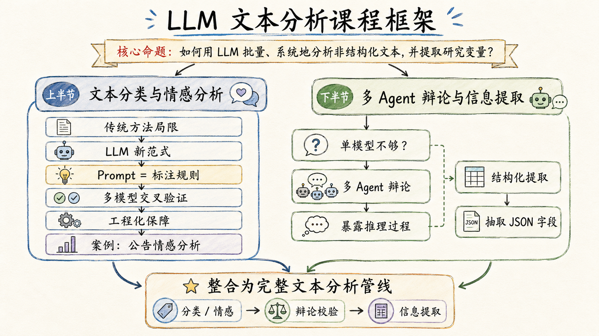
本次教学目标
学完本讲后, 你将能够：
- 理解 LLM 作为文本分析引擎的核心优势, 以及与词典法、传统 ML 分类器的本质差异
- 掌握「Prompt 即标注规则」的设计原则——用关键词和 JSON 约束替代模糊指令
- 搭建多模型交叉验证流程, 用「5 模型 x N 文件 → 投票 → 最终标签」的管线提升可靠性
- 实现断点续跑、原子写入、解析兜底等工程化保障机制
- 理解多 Agent 辩论的五阶段架构, 以及它相对于单模型分类的独特价值
- 用 LLM 从非结构化公告中提取结构化 JSON（股东名称、减持数量、比例、方式）
- 设计并跑通一条完整的文本分析管线——从原始文本到最终分析报告
上节：LLM 文本分类与情感分析
1. 传统方法的局限与 LLM 的新范式
在经管研究中, 文本分析最常见的就是情感分类——判断一段文本的情感倾向（积极 / 消极 / 中性）, 然后将其作为回归模型中的解释变量。年报语调、电话会议情绪、新闻情绪——这些都是经管顶刊中常见的研究变量。
传统方法怎么做？
| 方法 | 原理 | 代表工具 | 核心痛点 |
|---|---|---|---|
| 词典法 | 预定义情感词表, 统计正面词和负面词的出现频次, 用 (正面-负面)/(正面+负面) 构建情绪指数 | LM 词典、HowNet、NTUSD | 词典是通用的, 但语境是特定的——「ST 预警」在金融文本中是负面信号, 但通用词典可能不收录 |
| 传统机器学习 | 人工标注训练集 → 特征工程（TF-IDF / n-gram）→ 训练分类器（SVM / 随机森林）→ 预测 | scikit-learn | 需要标注大量训练样本, 标注成本高; 且模型难以捕捉长距离语义依赖 |
两种方法共享一个根本问题：规则是死的, 语言是活的。 词典无法处理否定句式（「并没有亏损」）、条件句式（「如果市场好转, 则…」）和隐含语气（「公司对前景持保留态度」）。而机器学习分类器受限于训练数据的规模和质量——标注 1000 条金融文本的成本足以让人望而却步。
LLM 改变了什么？
LLM 带来了一个范式转变：你不需要写规则, 也不需要标注训练集——你只需要写一个好的 Prompt。 LLM 本身就是你的分类器。
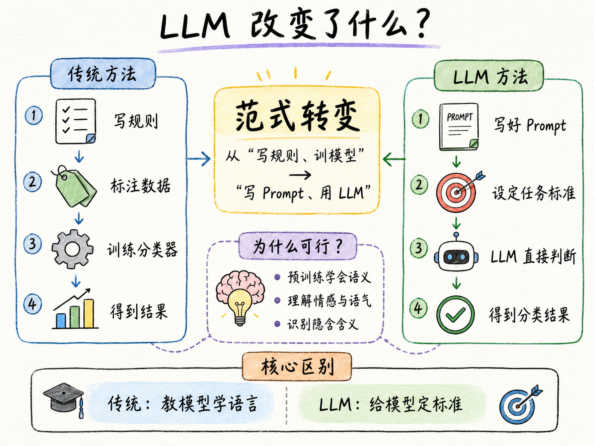
这个转变的核心逻辑是：LLM 在预训练阶段已经吸收了海量的文本语义知识, 包括对情感、语气、隐含含义的理解。你不再需要教模型「什么是积极情感」——它在训练数据中已经见过足够多了。你只需要告诉它在这个特定任务中, 什么算「积极」。
换句话说, 传统方法是在教模型「语言本身」, 而 LLM 方法是在给模型校准「领域标准」。
LLM 文本分析的三个核心应用场景：
| 应用 | 输入 | 输出 | 经管研究示例 |
|---|---|---|---|
| 情感分类 | 一段文本 | 标签（积极 / 消极 / 中性） | 年报语调与股价崩盘风险; 电话会议情绪与分析师预测 |
| 信息提取 | 一段文本 | 结构化 JSON | 股东减持公告中提取减持数量、比例、方式、时间窗口 |
| 主题建模 | 多篇文本集合 | 主题标签 + 核心摘要 | 政策文件主题分类; 文献自动聚类; 新闻报道事件归类 |
2. Prompt 即标注规则
用 LLM 做文本分析, 最重要的设计决策是写 Prompt。Prompt 的质量直接决定输出的质量——垃圾 Prompt 进, 垃圾标签出。
两个关键原则：
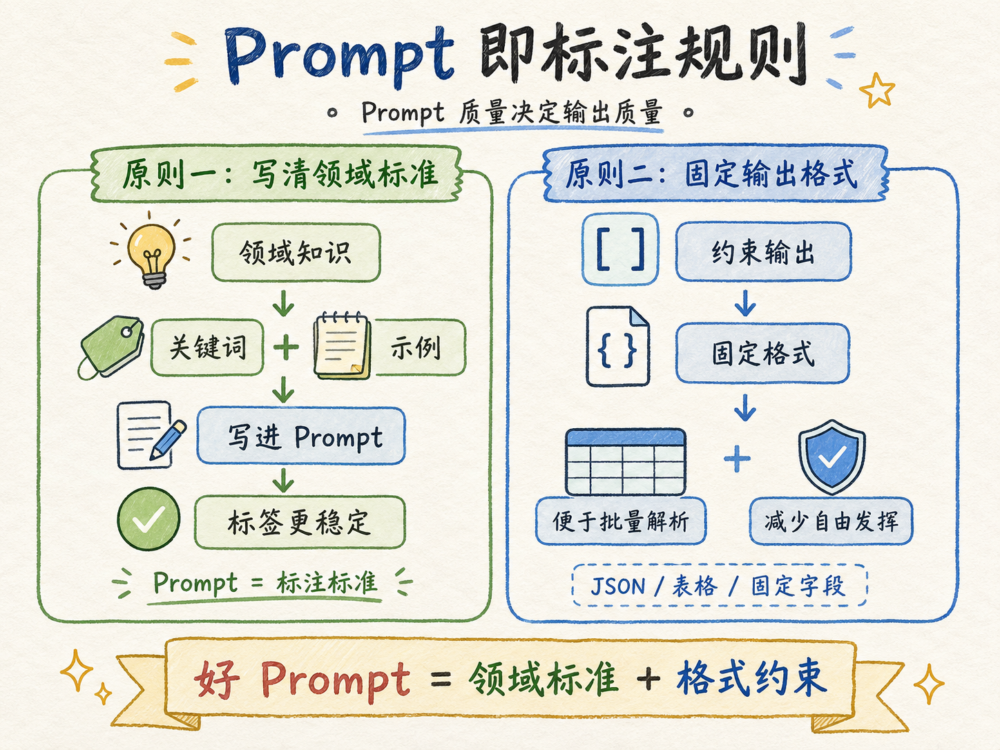
原则一：给出明确的关键词和示例, 把领域知识写进 Prompt。
不要只说「判断这段话的情感倾向」——LLM 不是金融分析师, 它不知道在你的研究语境中什么算「积极」。你需要告诉它：
你是金融文本情感分析专家。
积极信号（以下词汇或语境通常表示积极）：
- 利润增长、收入增加、订单扩大、中标、获批
- 超出预期、增长强劲、实现扭亏
- 分红、增持、回购、业绩增长、股权激励
- 并购重组、获得订单、战略合作
消极信号：
- 亏损、下滑、诉讼、处罚、资金链紧张
- ST 预警、低于预期、持续恶化、重大不确定性
- 减持、退市风险、行政处罚、债务危机
中性信号：
- 例行披露、股东大会通知、地址变更
- 纯事实陈述且无明显利好利空倾向将「领域知识」写进 Prompt, 比让模型自己猜要稳定得多。你在 Prompt 中列出的关键词列表, 本质上是你的「标注标准」——它让 LLM 知道什么样的文本应该被标记为哪个类别。
原则二：固定输出格式, 约束模型的生成行为。
不要让 LLM「自由发挥」——它会给你一段洋洋洒洒的分析, 但你没法批量处理。用固定标签或 JSON 约束输出：
要求：仅输出以下三个标签中的一个, 不要输出任何解释：
积极 / 消极 / 中性或者更严格：
要求：仅输出一个词。不要输出任何解释性文字。这种约束有两个好处：（1）可以批量解析, 直接写入数据库；（2）减少模型「自行发挥」导致的格式不确定性。
一个完整的情感分析 Prompt 示例：
# 中国上市公司公告情绪分析提示词
## 任务说明
你是一名专业的金融分析师。请分析以下上市公司公告内容,
判断该公告对公司股票价格的潜在影响, 并将情绪分类为：
积极 / 消极 / 中性。
## 参考关键词
- 积极：分红、增持、回购、业绩增长、获得订单、并购重组、股权激励
- 消极：减持、亏损、退市风险、行政处罚、诉讼、债务危机、业绩下滑
## 输出要求
请仅输出以下三个标签中的一个, 不要输出任何解释：
积极 / 消极 / 中性技巧： 把领域知识写进 Prompt, 比让模型自己猜更稳定。你怎么教一个研究助理识别金融情感, 就怎么教 LLM——关键词列表就是你的「标注手册」。
3. 多模型交叉验证
单模型分类有一个问题：模型有偏见。 不同模型在相同任务上的表现可能差异较大——有的偏保守（倾向中性）, 有的偏激进（倾向给出极性标签）。用单一模型的结果做回归, 你实际上在回归中引入了一个未知的测量误差。
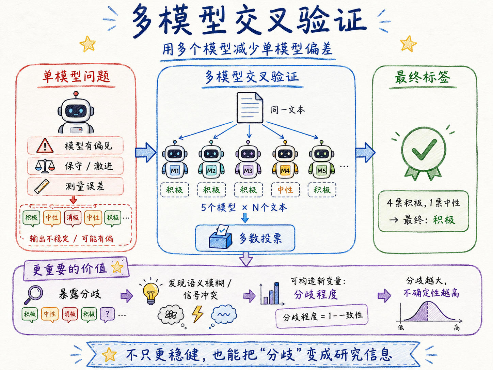
解决方案：多模型交叉验证。
5 个模型 x N 个文件 = 5N 次分类
投票（多数决）→ 最终标签具体做法：让多个不同的 LLM 分别对同一批文本做情感分类, 然后以多数投票决定每条文本的最终标签。如果 5 个模型中有 4 个判断为「积极」, 1 个判断为「中性」, 最终标签就是「积极」。
多模型交叉验证的价值不只是「更准确」——更重要的是暴露分歧。当 5 个模型对同一份公告给出不同标签时, 这份公告本身就是值得关注的。可能它确实语义模糊, 可能它包含了同时指向两个方向的信号。这种分歧信息本身对研究很有用——你可以把「模型间分歧程度」作为一个新的变量：当市场对某类信息本身就存在分歧时, 股价反应可能是不确定的。
课程案例：60 份公告 x 5 个本地模型的完整验证。
使用的 5 个模型（全部本地部署, 通过 Ollama 调用）：
| 模型标签 | 实际模型 | 参数量级 |
|---|---|---|
| gemma3_31b | gemma4:31b | ~31B |
| qwen3_5_35b | qwen3.5:35b | ~35B |
| qwen3_5_9b | qwen3.5:9b | ~9B |
| deepseek_r1_32b | deepseek-r1:32b | ~32B |
| deepseek_r1_14b | deepseek-r1:14b | ~14B |
5 个模型覆盖了不同架构（Gemma / Qwen / DeepSeek）和不同规模（9B-35B）, 这样做的目的是最大化模型间的独立性——如果 5 个模型都是同一家族的不同尺寸, 它们的「偏见」可能是同质的, 投票就失去了意义。
实际结果观察（部分）：
| 公告内容 | gemma | qwen35 | qwen9 | ds32 | ds14 | 一致性 |
|---|---|---|---|---|---|---|
| 2025 年年度权益分派实施公告 | 积极 | 积极 | 积极 | 积极 | 积极 | 5/5 |
| 持股 5% 以上股东减持股份预披露公告 | 消极 | 消极 | 消极 | 消极 | 消极 | 5/5 |
| 关于发行 H 股获得证监会备案的公告 | 积极 | 积极 | 积极 | 中性 | 中性 | 3/5 |
| 关于签署合作框架协议暨关联交易的公告 | 积极 | 中性 | 中性 | 积极 | 消极 | 分歧 |
多数公告五模型一致——这是好消息：对于情感信号明确的公告, LLM 的判断是可靠的。但部分模糊公告存在明显分歧——这恰恰说明多模型交叉验证的必要性。如果只用单一模型, 你可能拿到一个有偏的标签而毫无察觉。
4. 工程化保障机制
跑一条文本分析管线不是「写个脚本跑一次」就完事了。实际项目中, 你会面对几十上百个文件、每个文件需要调用模型几秒到几十秒、总耗时可能数小时。这期间, 网络可能中断、模型可能超时、输出格式可能异常——如果没有工程保障, 跑了一半崩溃, 你得从头再来。
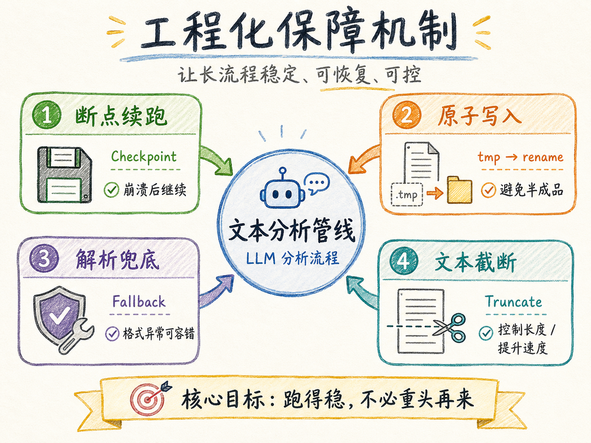
本课程的案例代码实现了四个关键工程机制：
（1）断点续跑（Checkpoint）
# 每处理完一份公告就保存 JSON checkpoint
# 中断后从上次断点继续, 不重复处理
checkpoint = load_checkpoint(model_name)
for txt_file in sorted(DATA_DIR.glob("*.txt")):
if txt_file.stem in checkpoint:
continue # 已处理, 跳过
value, raw = call_model(client, server_model, prompt, text)
checkpoint[txt_file.stem] = {"value": value, "raw": raw}
save_checkpoint(model_name, checkpoint) # 立即保存核心逻辑： 外层循环模型, 内层循环文件。每个模型有独立的 checkpoint（JSON 文件）。每处理完一份公告就立刻写入——即使程序在第 59 份公告时崩溃, 前 58 份也不会白跑。
（2）原子写入（Atomic Write）
# 先写 .tmp 再 rename, 防止写入中断导致文件损坏
def write_csv_atomic(df, path):
tmp_path = path.with_suffix(".tmp")
df.to_csv(tmp_path, index=False)
os.rename(tmp_path, path) # 原子操作为什么要先写 .tmp 再 rename？因为写大文件时如果进程被强制终止, 你可能得到一份不完整的 CSV——写了一半就中断了。原子写入保证：要么得到完整的旧版本, 要么得到完整的新版本, 永远不会得到损坏的半成品。
（3）解析兜底（Fallback Parsing）
LLM 的输出不是 100% 可控的——即使你在 Prompt 里要求「仅输出积极 / 消极 / 中性」, 模型偶尔还是会输出「该公告整体呈现积极倾向」或带着标点符号「积极。」。解析代码需要做容错处理：
def parse_sentiment(raw_output):
raw = raw_output.strip().lower()
if "积极" in raw or "positive" in raw:
return 1
elif "消极" in raw or "negative" in raw:
return -1
elif "中性" in raw or "neutral" in raw:
return 0
else:
# 解析失败, 降级为中性并记录日志
log_warning(f"Parse fallback: {raw_output[:50]}")
return 0宁可少给一个极性标签（降级为中性）, 也不要因为解析错误而给错标签。同时, 所有解析失败的情况都要记录日志, 以便事后人工复核。
（4）文本截断
LLM 有上下文窗口限制, 且处理超长文本时速度显著下降。对于上市公司公告, 关键信息通常在前半部分——标题、导语、主要条款。超过 6000 字符的部分往往是模板化的披露声明和法律条款, 对情感分析贡献很小：
MAX_CHARS = 6000
text = text[:MAX_CHARS] if len(text) > MAX_CHARS else text5. 公告情感分析完整案例
让我们把上述所有组件串联起来, 看一条完整的分析管线是怎么跑的。
数据来源： 巨潮网爬取的 60 份上市公司公告 TXT 文件。文件名格式为 STOCKID_PUBID_TITLE.txt：
000597_1225370066_2025 年年度权益分派实施公告.txt
000949_1225372625_持股 5 以上股东减持股份预披露公告.txt
002475_1225369948_关于发行境外上市外资股 H 股获得中国证监会备案的公告.txt工作流：
- 读取 Prompt： 从
sentiment_prompt.md加载情感分析提示词 - 外层循环模型, 内层循环文件： 对于 5 个模型中的每一个, 逐文件调用 Ollama API, 传入 Prompt + 公告文本
- 解析输出 + 写 Checkpoint： 每次调用后立即解析模型输出（1 / -1 / 0）, 写入 JSON checkpoint
- 汇总为 CSV： 所有模型跑完后, 将 checkpoint 合并为一张完整的
sentiment.csv - 人工抽检： 对存在分歧的公告进行人工复核
输出文件 sentiment.csv 的结构：
| STOCKID | PUBID | TITLE | gemma3_31b | qwen3_5_35b | qwen3_5_9b | deepseek_r1_32b | deepseek_r1_14b |
|---|---|---|---|---|---|---|---|
| 000597 | 1225370066 | 2025 年年度权益分派实施公告 | 1 | 1 | 1 | 1 | 1 |
| 000949 | 1225372625 | 减持预披露公告 | -1 | -1 | -1 | -1 | -1 |
关键经验：
- 用户提示词很短, 但 Agent 需要展开大量工程细节。 「读取 TODO.md 并执行」——这 8 个字背后是：加载 5 个模型、循环 60 个文件、写 checkpoint、解析输出、原子写 CSV。Agent 需要自己补全这些上下文。
- TODO 文件是人和 Agent 协作的「需求文档」。 把需求从一句话展开为可验证的 checklist（模型列表、输出格式、循环顺序、错误处理）, 是高效使用 Agent 的好习惯。
- 长耗时 LLM 任务必须有 checkpoint + 可恢复机制。 跑 5x60=300 次模型调用, 总耗时可能超过 1 小时。如果没有断点续跑, 一次网络抖动就可能前功尽弃。
案例材料位置：
task10/Text_Juchao/——sentiment_prompt.md（提示词）、sentiment_analysis.py（分析脚本）、sentiment.csv（5 模型对比结果）。
下节：多 Agent 辩论与信息提取
6. 多 Agent 辩论：不止于一个标签
单模型情感分类有一个根本限制：它只输出一个标签, 你无法知道它在「纠结」什么。 模型内部可能认为某条信息既有利好也有利空, 但按照 Prompt 的指令, 它被迫只输出一个词。你不知道它的推理过程, 也不知道有哪些反对论据被它压下去了。
多 Agent 辩论提供了另一种思路：不要一个裁判, 要两个律师。
想象这样的场景——一份公告包含复杂信息：公司宣布定向增发, 大股东参与认购, 锁定期 18 个月, 但资金投向一个公司从未涉足的行业。单模型可能直接给「积极」（因为大股东参与）, 也可能给「消极」（因为转型风险高）。无论哪个标签, 都丢失了另一半信息。
多 Agent 辩论的核心思想：让正方和反方各陈己见, 交叉反驳, 最后由中立裁判裁决。 你不仅得到最终判决, 还得到完整的论辩记录——正反双方的论据、反驳、关键交锋点。这些远比一个标签有价值。
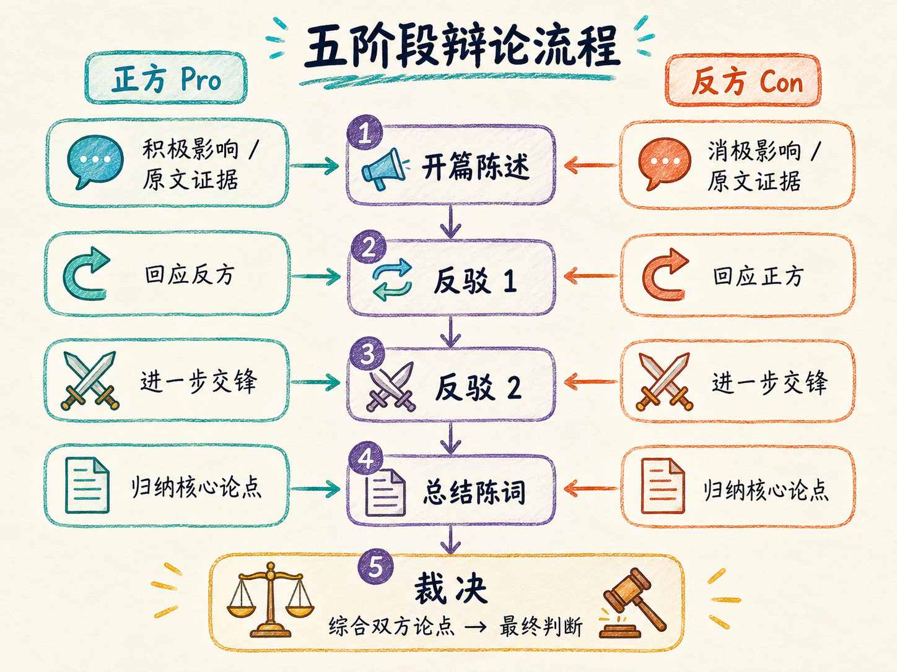
五阶段辩论架构：
| 阶段 | 正方 (Pro) | 反方 (Con) | 字数限制 |
|---|---|---|---|
| 开篇陈述 (Round 0) | 论证积极影响, 引用原文证据 | 论证消极影响, 引用原文证据 | 200-400 词 |
| 反驳 1 (Round 1) | 针对反方开篇论据逐条回应 | 针对正方开篇论据逐条回应 | 150-300 词 |
| 反驳 2 (Round 2) | 针对反方反驳 1 进一步交锋 | 针对正方反驳 1 进一步交锋 | 150-300 词 |
| 总结陈词 (Round 3) | 归纳已方核心论点 | 归纳已方核心论点 | 150-250 词 |
| 裁决 | — | — | 200-400 词 |
关键设计：
- 正反方使用相同模型, 消除系统性偏差——如果 Pro 用强模型、Con 用弱模型, 辩论结果就失去了意义
- 每轮正反方同时启动（并行执行）, 互不等待对方输出——这保证了双方在同一信息基础上辩论, 不会出现「反方看到了正方论据后才构思反驳」的不公平
- 裁判使用独立的、推理能力更强的模型, 只读双方的论辩记录, 从论证强度、反驳质量、证据质量、逻辑一致性、修辞效果五个维度评估
这个架构的本质是模拟学术同行评议：两位审稿人各自写意见 → 互相看到对方意见 → 进一步回应 → 编辑做最终裁决。
7. 辩论案例：顺景科技定向增发公告
案件背景： 顺景科技（603007）发布 2026 年度定向增发预案——拟向不超过 35 名特定对象发行不超过总股本 30% 的股份（不超过 2.65 亿股）, 募集不超过 10.77 亿元, 投向压力传感器生产线（2.12 亿）、IMU 生产线（3.98 亿）、研发中心（3.07 亿）和补充流动资金（1.6 亿）。公司此前经历两次行业跳跃：园林工程 → 金属油箱 → 汽车传感器。
辩论命题： 这份公告对股票价格是正向影响还是负向影响？
正方核心论点（积极）：
| 论点 | 核心逻辑 |
|---|---|
| 战略转型高增长市场 | 中国汽车传感器市场约 982 亿元, IMU 全球市场 CAGR 8.2%; 国产替代政策背书; 从低端制造向高端精密制造跃升 |
| 大股东 18 个月锁仓 = 强烈信号 | 控股股东苏州辰顺锁仓期（18 个月）是其他认购对象的 3 倍——说明大股东用真金白银和时间赌股价上涨 |
| 现有客户 = 现成需求通道 | 已向理想、零跑、奇瑞、岚图、上汽大通等整车厂供应金属油箱——交叉销售传感器产品的商业化摩擦低 |
反方核心论点（消极）：
| 论点 | 核心逻辑 |
|---|---|
| 毁灭性稀释, 无近期回报 | 最多稀释 30% EPS; 项目建设期 36 个月; 公司在 MEMS 传感器领域经验为零——投资者当下买单, 回报遥不可及 |
| 控股股东是空壳, 不是信号 | 苏州辰顺 2025 年收入为 0、净亏损 571 万元——一个亏损空壳参与 10 亿增发是红旗而非信心; 18 个月锁仓是证监会硬性要求, 不是自愿行为 |
| 三次行业跳跃, 零信用积累 | 园林工程 → 金属油箱 → MEMS 传感器——三个毫无交集的行业; 无半导体 IP、无 MEMS 制造经验、尚无备案环评 |
裁决结果：反方（消极）险胜。
裁判的关键判断：
- 反方最强点： 成功将正方「锁仓 = 信号」解构为「锁仓 = 监管要求 ≠ 自愿信心」——这直接击穿了正方论证的基础
- 正方最强点： 已有的汽车 OEM 关系确实可降低商业化摩擦——但过度依赖市场总规模和政策叙事, 未能充分解释为什么顺景科技这家公司能在合理时间内抓住机会
- 辩论转折： Round 2 反方的反驳将「18 个月锁仓是证监会针对控股股东的硬性要求」这一事实嵌入论证——正方未能有效回应, 核心论据被瓦解
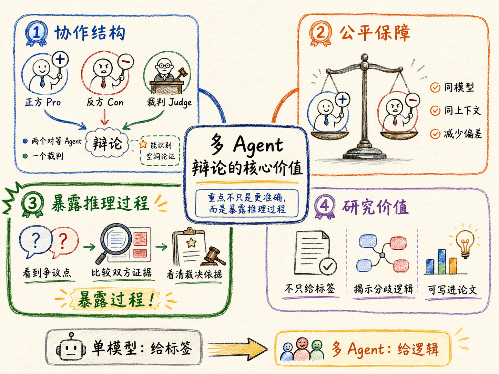
多 Agent 辩论的核心价值不在于「更准确」, 而在于暴露推理过程。 你会看到 AI 在纠结什么、哪些证据被两方同时引用、最终裁决的依据是什么。这对经管研究尤其重要——你可以把论证逻辑写进论文, 而不是只报告一个标签。
关键经验总结：
- 多 Agent 协作范式 不是单个模型多次推理, 而是两个对等 Agent + 一个裁判 Agent 的真人辩论模拟
- 对称模型保障公平——Pro 和 Con 用相同模型、相同上下文窗口, 消除系统性偏差
- 裁判能识别「空洞」——不会因语言自信而加分, 会察觉「用市场总规模替代公司前景」等逻辑漏洞
- 从单模型分析到多模型辩证——同一篇公告, 单模型只能给标签; 多 Agent 辩论能揭示分歧背后的深层逻辑
8. 信息提取：从非结构化文本到结构化 JSON
情感分析输出标签。信息提取输出结构化数据——更难, 但更有用。
想想你做一个实证研究需要什么。如果研究「股东减持对股价的影响」, 你需要的不只是一个「这份公告和减持有关」的标签——你需要减持股东是谁、减持了多少股、减持比例、减持方式、减持时间段。这些是回归的变量, 必须从文本中提取为结构化数字。
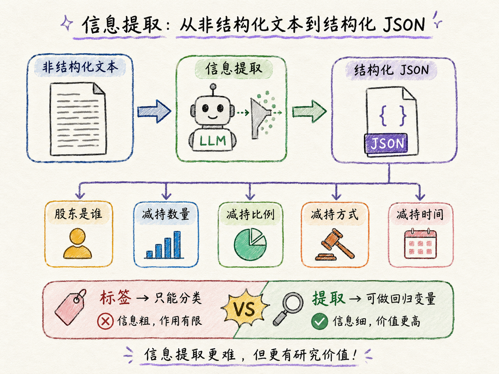
案例：从 60 份公告中提取股东减持的结构化信息。
需要提取的字段：
{
"relevant": true,
"reductions": [
{
"shareholder_name": "深圳顺景科技合伙企业（有限合伙）",
"share_count": 16568900,
"share_ratio": "3.85%",
"method": "集中竞价",
"period_start": "2026-01-15",
"period_end": "2026-07-14"
}
]
}系统 Prompt 设计（关键部分）：
## 任务说明
阅读以下上市公司公告, 判断是否与股东减持股份有关。
## 提取字段
1. shareholder_name（股东全称）
2. share_count（减持数量, 股）
3. share_ratio（减持比例, 保留原始格式如 "1%"）
4. method（减持方式：集中竞价 / 大宗交易 / 协议转让 / 司法拍卖）
## 输出格式
仅输出合法 JSON, 不要包含其他文字。
如果公告与减持无关, 输出 {"relevant": false, "reductions": []}。
如果某字段无法从公告中确定, 填写 "未披露"。技巧： 要求 JSON 输出, 方便后续直接解析和写入 CSV。不要给模型自由发挥的空间——JSON Schema 就是约束。
9. 信息提取的四个关键挑战
将自然语言中的信息转化为结构化字段, 会遇到一些传统 NLP 任务不常见但实际项目中必然遇到的挑战：
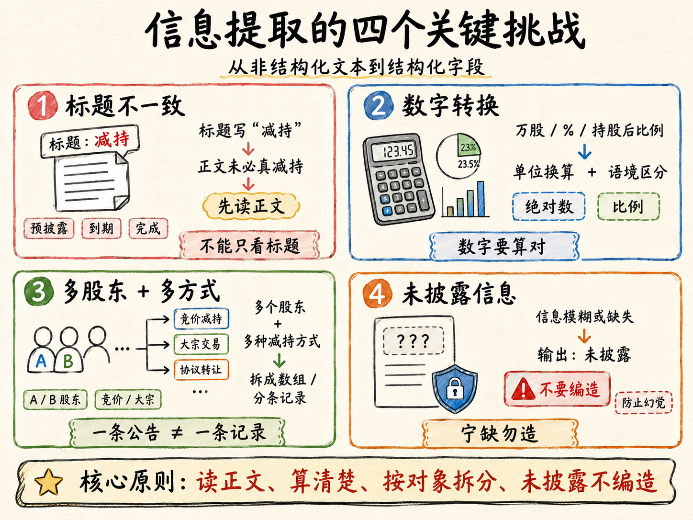
挑战 1：标题不一致——「减持」不一定真减持。
公告标题写了「减持」, 但正文可能是：减持计划已到期（无实际减持）、减持预披露（只有意向）、减持完成（结果公告）。标题判断会带来严重误判。Prompt 必须要求模型先读正文再判断, 而非依赖标题。
挑战 2：自然语言数字转换。
中文公告中的数字格式多样：「1,656.89 万股」→ 16568900, 「不超过 5%」→ 比例而非绝对数, 「减持后持股 11.58%」→ 这是减持后的剩余比例, 不是减持比例。Prompt 需要明确要求模型进行单位转换, 并区分不同语境下的数字含义。
挑战 3：多股东 + 多方式组合。
一份公告可能涉及多个股东, 每个股东的减持方式、数量、时间段各不相同。例如：「股东 A 通过集中竞价减持不超过 1%, 股东 B 通过大宗交易减持不超过 2%」。输出需要是一个数组, 每个元素对应一个股东的一次减持行为。
挑战 4：未披露信息。
有些公告对关键信息做了模糊化处理——「减持数量将根据市场情况确定」「减持期间为公告之日起 6 个月内」——这意味着具体数量和日期可能无法精确提取。Prompt 需要告诉 LLM：如果某字段无法确定, 输出「未披露」而不是编造一个值。LLM 的幻觉在这个场景中代价极高——如果你把一个编造的数字放入回归, 你的结果是不可信的。
解决方案总结：
| 挑战 | 解决方案 |
|---|---|
| 标题不一致 | Prompt 要求「先读正文再判断相关性, 不要依赖标题」 |
| 数字转换 | Prompt 明确要求股数转换为整数、比例保留百分比格式 |
| 多股东 | 输出 JSON 数组, 每个元素一个股东；后处理展平为多行 |
| 未披露 | Prompt 明确「不确定时输出’未披露’, 不要猜测」；人工复核 |
10. 完整文本分析管线
现在我们把上半节和下半节的组件整合起来, 画出一条完整的文本分析管线。
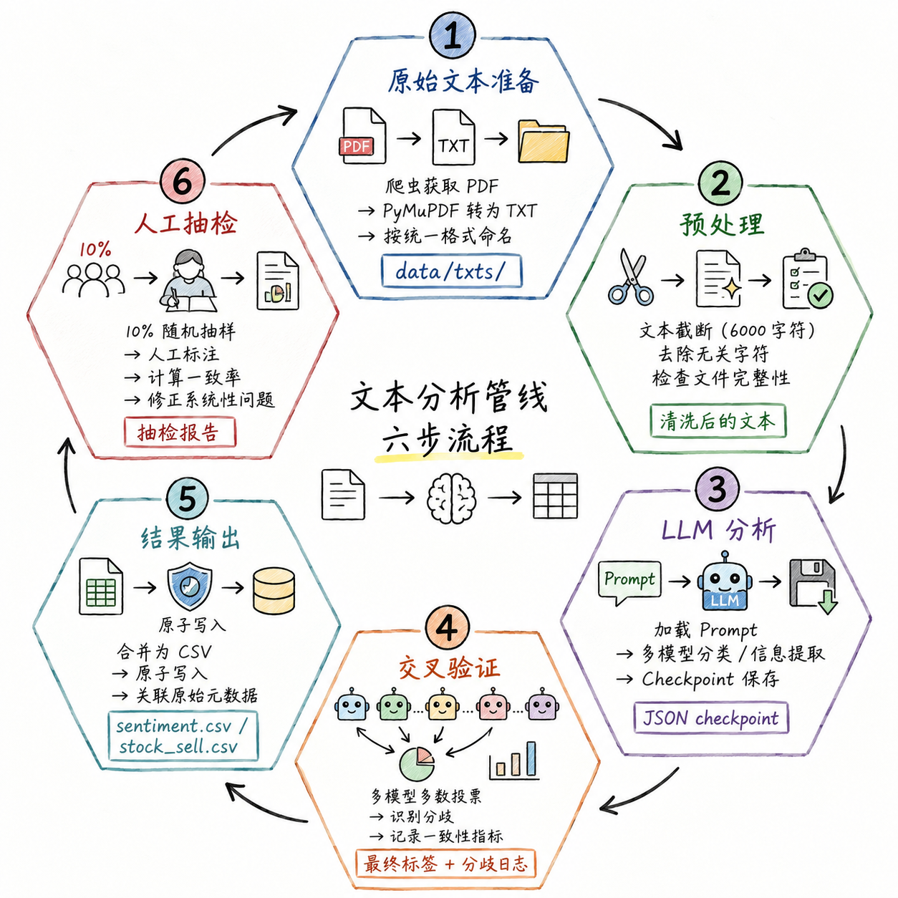
管线六阶段：
| 阶段 | 做什么 | 产出 |
|---|---|---|
| 1. 原始文本准备 | 爬虫获取 PDF → PyMuPDF 转为 TXT → 按统一格式命名 | data/txts/ |
| 2. 预处理 | 文本截断（6000 字符）、去除无关字符、检查文件完整性 | 清洗后的文本 |
| 3. LLM 分析 | 加载 Prompt → 多模型分类 / 信息提取 → Checkpoint 保存 | JSON checkpoint |
| 4. 交叉验证 | 多模型多数投票 → 识别分歧 → 记录一致性指标 | 最终标签 + 分歧日志 |
| 5. 结果输出 | 合并为 CSV → 原子写入 → 关联原始元数据 | sentiment.csv / stock_sell.csv |
| 6. 人工抽检 | 10% 随机抽样 → 人工标注 → 计算一致率 → 修正系统性问题 | 抽检报告 |
11. 人工抽检：不能省略的最后一步
无论 Prompt 写得多好、交叉验证做得多严密, 人工抽检是文本分析管线的最后一道防线。 LLM 降低了标注成本, 但金融领域的最终判断仍需人工把关。尤其当你把 LLM 生成的标签作为回归变量时, 标签质量的系统性问题会被放大——Garbage in, garbage out。
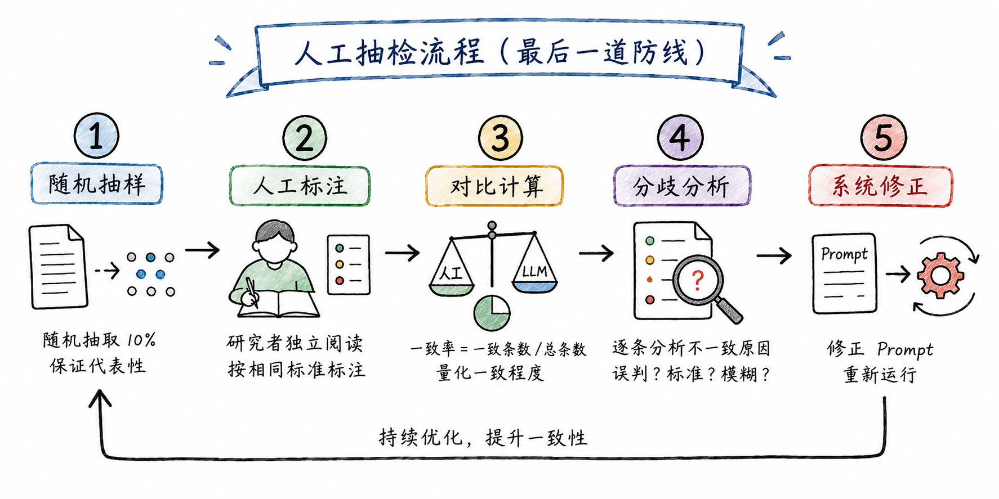
标准抽检流程：
- 随机抽样： 从全量文本中随机抽取 10%（20 条数据就抽 2 条, 100 条抽 10 条）, 保证样本代表性
- 人工标注： 研究者本人（而非 LLM）独立阅读文本, 按照相同的分类标准给出标签
- 对比计算： 将人工标注结果与 LLM 标注结果逐条对比, 计算一致率 = 一致条数 / 总条数
- 分歧分析： 对所有不一致的条目, 逐一分析原因——是 LLM 误判？还是分类标准不清晰？还是文本本身确实模糊？
- 系统修正： 如果发现 LLM 存在系统性偏差（如一致性地将某类公告判错）, 修正 Prompt 并重新运行
一个务实的标准： 一致率 ≥ 90%——可以接受, 在论文中报告一致率。一致率 < 90%——需要检查 Prompt 是否存在问题, 修正后重新验证。一致率 < 80%——Prompt 设计有重大缺陷, 不能用于正式分析。
经验法则： 如果你的研究方向对标签精度要求特别高（如法律文本、财务舞弊识别）, 建议将抽检比例提高到 20-30%, 并对所有 LLM 判定为边界的样本进行全量人工复核。
12. 经管文本分析的应用全景
本讲以公告情感分析和股东减持信息提取为例展示了技术方法。但 LLM 文本分析的应用远不止于此。以下是经管研究中常见的文本分析场景：
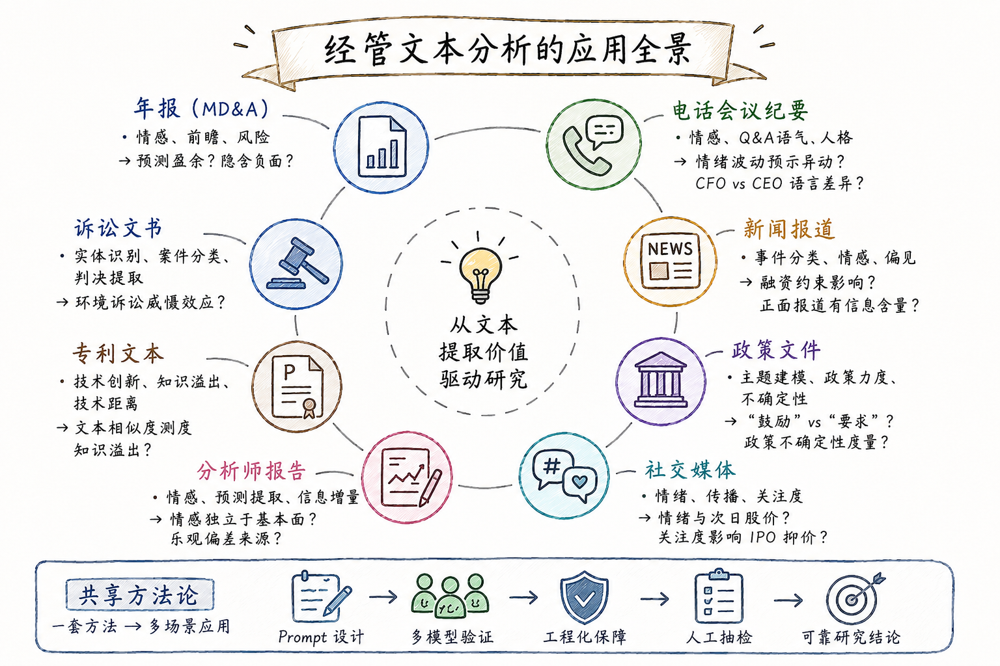
| 文本来源 | 分析任务 | 典型研究问题 |
|---|---|---|
| 年报（MD&A） | 情感分析、前瞻性信息披露、风险披露 | 年报语调能否预测未来盈余？管理层讨论是否隐藏负面信息？ |
| 电话会议纪要 | 情感分析、Q&A 语气分析、管理者人格 | 电话会议中的情绪波动是否预示股价异动？CFO vs CEO 的语言差异？ |
| 新闻报道 | 事件分类、情感分析、媒体偏见 | 媒体报道对企业融资约束的影响？正面报道是否具有信息含量？ |
| 政策文件 | 主题建模、政策力度量化、政策不确定性 | 产业政策文本中「鼓励」vs「要求」的区分？政策不确定性的文本度量？ |
| 社交媒体 | 情绪分析、信息传播、投资者关注度 | 微博 / 股吧情绪与次日股价的相关性？散户关注度对 IPO 抑价的影响？ |
| 分析师报告 | 情感分析、预测提取、信息增量 | 分析师报告中的情感是否独立于基本面？乐观偏差的系统性来源？ |
| 专利文本 | 技术创新测度、知识溢出、技术距离 | 专利摘要中的文本相似度能否测度知识溢出？ |
| 诉讼文书 | 实体识别、案件分类、判决结果提取 | 环境诉讼对企业环境行为的威慑效应？ |
关键洞察： 以上所有应用共享同一套底层方法论——Prompt 设计 + 多模型验证 + 工程化保障 + 人工抽检。学会了一个场景, 你就学会了所有场景。
13. Prompt 设计前后对比
最后, 我们通过一个前后对比来加深对「Prompt 即标注规则」的理解。
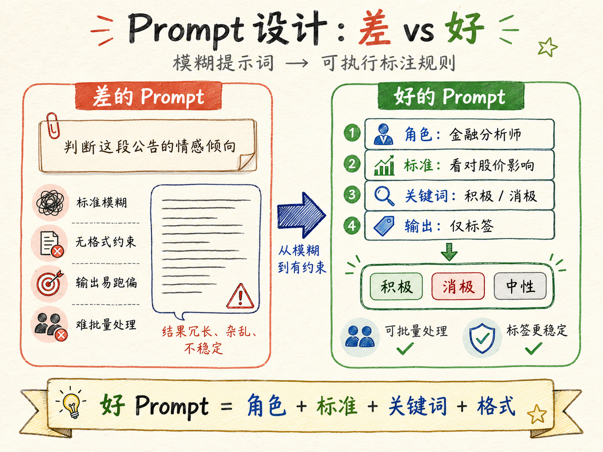
差的 Prompt（模糊、无约束）：
请判断下面这段上市公司公告的情感倾向。为什么差？LLM 不知道你的分类标准是什么, 不知道输出格式是什么, 可能会给你一段 200 字的分析——你没法批量处理。
好的 Prompt（精确、有约束）：
# 中国上市公司公告情绪分析提示词
## 任务说明
你是一名专业的金融分析师。请分析以下公告内容,
判断该公告对公司股票价格的潜在影响, 并将情绪分类为：
积极 / 消极 / 中性。
## 参考关键词
- 积极：分红、增持、回购、业绩增长、获得订单、并购重组、股权激励
- 消极：减持、亏损、退市风险、行政处罚、诉讼、债务危机、业绩下滑
## 输出要求
请仅输出以下三个标签中的一个, 不要输出任何解释：
积极 / 消极 / 中性为什么好？明确了角色（金融分析师）、判断标准（对股价的影响）、关键词列表（什么是积极 / 消极）、输出格式（三个标签之一, 不给解释）。这四个要素构成了一张完整的「标注规则」——任何一个研究助理看到这个提示词, 都可以开始标注了。LLM 也一样。
实战任务
本次课后, 请完成以下实战练习：
任务： 收集 20-50 份与你研究方向相关的文本（公司公告、年报、新闻报道、政策文件等）, 用 LLM 做批量文本分析。
步骤：
- 准备文本： 将 20-50 份文本文件放入
input/texts/, 统一 TXT 格式 - 定义任务： 确定分析类型——情感分类 / 主题分类 / 信息提取（三选一）
- 编写 Prompt： 先写 Prompt, 用 3 份文本手工测试; 调整直到输出稳定
- 搭建管线： 复用课程案例代码（
sentiment_analysis.py或extract_reduction.py）, 适配你的任务 - 批量运行： 至少使用 2 个模型交叉验证（建议 3 个以上）
- 抽检验证： 随机抽样 10% 做人工检查, 计算一致率
- 输出报告： 报告分析结果 + 抽检一致率 + 典型分歧案例
进阶挑战（二选一）：
- 多 Agent 辩论： 对至少 3 份存在不确定性的文本, 运行多 Agent 辩论, 对比辩论结果与单模型分类结果的差异
- 信息提取管线： 从你自己的研究文本中定义提取字段, 设计 JSON Schema, 跑通完整的提取管线
参考案例：
B 班 -Agent 课程 /Text_Juchao/——完整的情感分析和信息提取项目, 包含 Prompt 文件、分析脚本、输出结果和文档。
案例材料索引
| 材料 | 位置 | 说明 |
|---|---|---|
| 情感分析 Prompt | task10/Text_Juchao/sentiment_prompt.md |
完整的中国上市公司公告情感分析提示词 |
| 情感分析脚本 | task10/Text_Juchao/sentiment_analysis.py |
5 模型交叉验证的完整 Python 实现 |
| 5 模型对比结果 | task10/Text_Juchao/sentiment.csv |
60 份公告 x 5 个模型的情感标签 |
| 减持信息提取需求 | task10/Text_Juchao/TODO_extrac.md |
信息提取任务的需求文档 |
| 信息提取脚本 | task10/Text_Juchao/extract_reduction.py |
从公告中提取减持结构化信息的脚本 |
| 提取结果 | task10/Text_Juchao/stock_sell.csv |
提取的股东减持结构化数据 |
| 多 Agent 辩论案例 | task11/Multi-Agent-Debate/ |
顺景科技定增公告辩论的完整记录 |
| 辩论 TODO | task11/Multi-Agent-Debate/TODO.md |
多 Agent 辩论任务的需求文档 |
本讲核心概念回顾
| 概念 | 一句话解释 |
|---|---|
| LLM 作为文本分析引擎 | 不需要标注训练集——写一个好的 Prompt, LLM 就是你的分类器 |
| Prompt 即标注规则 | Prompt 中的关键词列表 = 你的标注标准; JSON 约束 = 你的输出格式要求 |
| 多模型交叉验证 | 5 个模型对同一批文本分类, 多数投票决定最终标签——暴露分歧, 提高可靠性 |
| 断点续跑 | 每处理完一个文件就保存 checkpoint——中断后不重复处理, 不丢失进度 |
| 原子写入 | 先写 .tmp 再 rename——永远不会得到损坏的半成品文件 |
| 解析兜底 | LLM 输出异常时降级为默认值 + 记录日志——不让一条异常拖垮整条管线 |
| 多 Agent 辩论 | 正方 + 反方 + 裁判, 五阶段交叉辩论——暴露推理过程而非只输出标签 |
| 结构化信息提取 | 从自然语言到 JSON——把文本中的数字、实体、关系变成可直接回归的变量 |
| 人工抽检 | 10% 随机抽样 + 人工标注 + 一致率——LLM 结果不能代替最终把关 |
| 完整管线 | 原始文本 → 预处理 → LLM 分析 → 多模型验证 → 输出 → 人工抽检 |
下一讲预告
第八讲：AI 辅助规范实证研究。 我们将从文本分析走向因果推断——用 Agent 完成从研究设计到回归输出的完整实证流程。你将看到：如何让 Agent 帮你在 DID、IV、RD 之间选择识别策略？如何搭建规范的 Stata 项目标准？以及一个致命的错误——为什么标准误的聚类层级决定了你的结果是否可信。
完整案例文件见task目录。
前序讲次： 第六讲 AI 辅助数据采集 | 后续讲次： 第八讲 AI 辅助规范实证研究